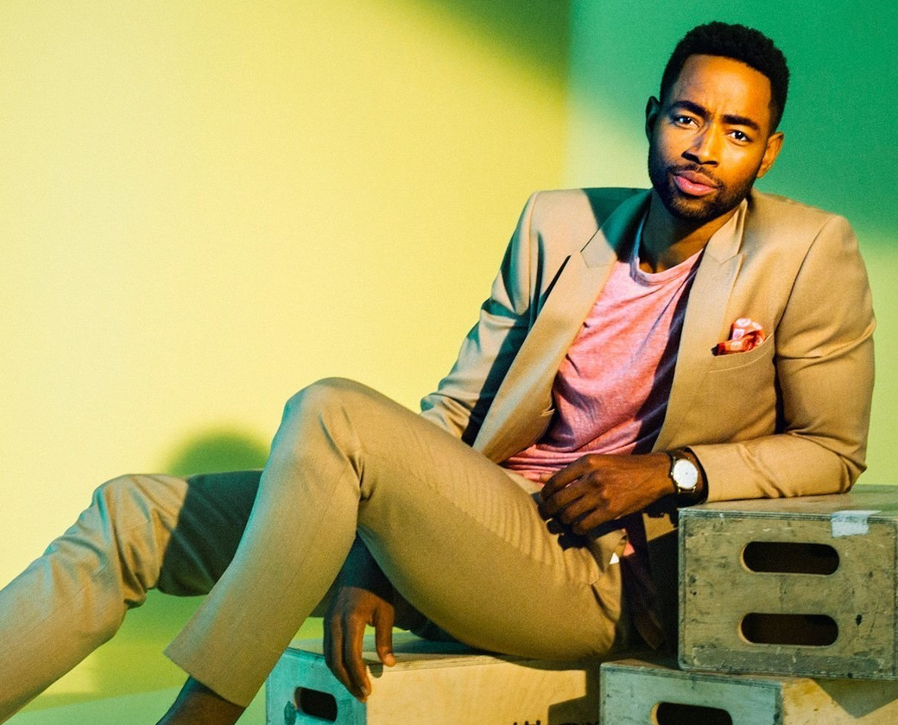

少年時代はアメリカ、カナダを転々とし、聖職者を志す。ニュージャージーで高校時代を送り、膝のケガのためレスリング部を辞めると演劇を始めて熱中し、学校を中退してニューヨークのネイバーフッド・プレイハウスに通う。「エンドレス・ラブ」（81）でデビューし、「卒業白書」（83）、「レジェンド」（85）を経て、「トップガン」（86）でブレイク。瞬く間にスター俳優となる。「レインマン」（88）や「インタビュー・ウィズ・ヴァンパイア」（94）などヒット作に恵まれ、ポーラ・ワグナーとともに設立した製作会社クルーズ/ワグナープロダクションズで「ミッション:インポッシブル」シリーズ（96～）をはじめとした自身の主演作を製作し、俳優およびプロデューサーとして成功を収めている。「7月4日に生まれて」（89）、「ザ・エージェント」（96）でアカデミー主演男優賞、「マグノリア」（99）で同助演男優賞にノミネート。そのほか「マイノリティ・リポート」（02）、「ラストサムライ」（03）、「オブリビオン」（13）、「オール・ユー・ニード・イズ・キル」（14）など、数々の話題作に主演している。2022年には出世作「トップガン」の約36年ぶりとなる続編「トップガンマーヴェリック」が公開。私生活では、女優のミミ・ロジャース、ニコール・キッドマン、ケイティ・ホームズとの結婚及び離婚歴をもつ。
両親の友人の勧めでモデルになる。コマーシャルや雑誌の仕事を経て、1982年にテレビドラマ『Tales of the Unexpected』の「The Girl」の回に出演して女優デビュー。 そして1984年に『ワンス・アポン・ア・タイム・イン・アメリカ』でヒロインの子供時代役を得て映画デビューを飾った。 1985年の『フェノミナ』で特に日本ではポストブルック・シールズとして注目され、数社のコマーシャルに起用、日本語でのレコード発売、映画雑誌の表紙を飾るなどしてアイドル的な人気を得た。その後はやや低迷し、『ホット・スポット』を皮切りに計7つの映画でヌードを披露した。2000年の『レクイエム・フォー・ドリーム』の演技が評判を呼び、インディペンデント・スピリット賞助演女優賞にノミネートされた。ついで2001年公開の『ビューティフル・マインド』でアカデミー助演女優賞・ゴールデングローブ賞 助演女優賞・英国アカデミー賞 助演女優賞 ・第7回放送映画批評家協会賞 助演女優賞・アメリカ映画協会賞年間最優秀女優賞を獲得し、演技派女優として認められるようになる。2005年には『仄暗い水の底から』のリメイク『ダーク・ウォーター』に主演。俳優以外の活動では、バレンシアガやレブロンの広告塔を務めている。2005年にアムネスティ・インターナショナルUSAの人権教育大使に任命される。 ピープル誌などの「世界で最も美しい50人」に選ばれたこともある。
2010年の映画『ラビット・ホール』における演技でクロトルディス賞助演男優賞にノミネートされた。2011年に公開された『フットルース 夢に向かって』では1984年のオリジナル版『フットルース』でクリス・ペンが演じたウィラード役を務めている。テラーは1998年初演の舞台版『フットルース』でも同じ役を演じたことがある。2012年には、『ハングオーバー! 消えた花ムコと史上最悪の二日酔い』のトッド・フィリップス監督の『プロジェクト X』、同じく『ハングオーバー!』の脚本家ジョン・ルーカスとスコット・ムーアが監督する『21オーバー 最初の二日酔い』という、テラー出演のコメディ映画2本が公開される。2014年には映画『セッション』に主演し数々の映画賞にノミネートされた。2022年に公開された『トップガン マーヴェリック』にて、前作『トップガン』でアンソニー・エドワーズが演じたグースの息子であるブラッドリー・“ルースター”・ブラッドショー大尉を演じた。
バルバロの最初の主要なテレビの役割は、ライフタイムテレビ シリーズUnREALの第 2 シーズンでヤエルのキャラクターを描いたことでした。[10]ヤエルは「ホット・レイチェル」としても知られており、シリ・アップルビーが演じたキャラクターの敵である. UnREALでの仕事に続いて、バーバロは新しいNBC法務ドラマシカゴ ジャスティス( Dick Wolfのシカゴ フランチャイズエントリ)の主役としてキャストに加わった。[14]シカゴ・ジャスティスで、彼女は、教育水準が高く、鞭が賢く、口が速く、機知に富んだ州の補佐官であるアンナ・バルデスを演じました。[15] 2018年、バルバロは、ジョシュ・グローバンとトニー・ダンザとともに、『グッド・コップ』で殺人捜査官のコーラ・バスケスも演じた。2018 年から 2019 年にかけて、バーバロはABCのホームコメディ『Splitting Up Together』で、マーティンの新しいガールフレンドであるリサ アップルの役を繰り返し演じました。
2019 年、プルマンは、ジョージ クルーニー主演の同名の 1961 年の小説をHuluで翻案したCatch-22で、メジャー メジャー メジャー メジャーとして繰り返し出演しました。その同じ年、彼はスリラー映画Them That Followに出演した。2022 年、プルマンは Amazon シリーズのアウター レンジでレット アボットを演じ、トム クルーズ主導の続編トップ ガン: マーベリックでロバート "ボブ" フロイド中尉を演じ、プレスでロマンチックな主役を演じました。再生します。彼は、スティーブン キングによる1975 年の同名の小説を翻案した、ジェームズ ワンがプロデュースしたホラー映画、セイラムズ ロットで次の主演を務める予定です。ハリウッド レポーターは、この役職は「プルマンにとって突破口となり、キャリアを築くことを約束する」と書いています。
2004年、エリスはロサンゼルスに移り、俳優としてのキャリアに専念しました。彼は 2005 年にプロの俳優としてのキャリアを開始し、テレビ シリーズInvasion and Relatedの 1 つのエピソードに簡単に出演しました。2011 年から 2012 年にかけて、グレイズ アナトミー、NCIS、ママと恋に落ちるまでのシリーズに出演しました。彼の最初の主要な演技の役割は 2013 年で、BETのシリーズThe Gameに出演しました。2015年 8 月、エリスは2016 年 10 月に初公開されたHBOのコメディ シリーズInsecureのキャストに加わったことが発表された。イッサ・レイが演じるイッサ・ディーのキャラクター。ショーでの彼の作品により、エリスは第 49 回 NAACP イメージ アワードでコメディ シリーズ賞の優秀助演男優賞を受賞しました。彼はトップガン：マーベリックでルーベン「ペイバック」フィッチとして主演しました。
